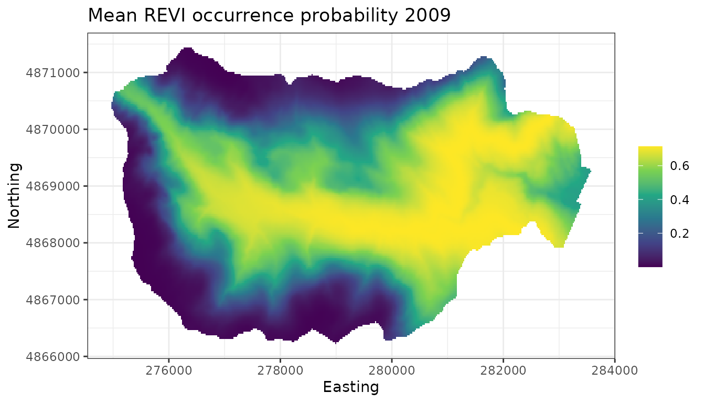
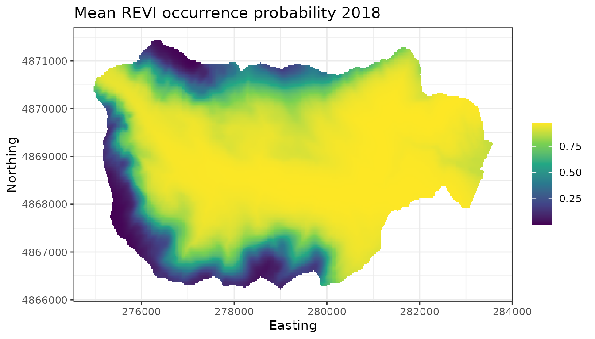

Multi-season occupancy models for assessing species trends and spatio-temporal occurrence patterns
Jeffrey W. Doser and Marc Kéry
2022
Source:vignettes/spaceTimeModelsHTML.Rmd
spaceTimeModelsHTML.RmdIntroduction
This vignette details spOccupancy functionality
introduced in v0.4.0 to fit multi-season occupancy models. Throughout
this vignette, we use “multi-season occupancy model” to refer to any
model where the true system state, represented by occupancy, changes
over the duration of the sampling that produced the data. As such, this
term comprises both strictly dynamic occupancy models (which express
change by colonization and extinction parameters), as well as simpler
models that contain more phenomenological descriptions of occupancy
change over time. Currently, and in this vignette, we deal with the
latter type of multi-season model; fully dynamic models may be the
subject of future work later on.
A primary goal of monitoring programs is often to document and
understand trends in species occurrence over time, in addition to
understanding spatiotemporal variability in occurrence in relation to a
set of covariates. Until v0.4.0, spOccupancy functionality
has focused solely on the spatial dimension. Here we introduce the
functions tPGOcc() and stPGOcc(), which fit
nonspatial and spatial multi-season occurrence models, respectively, for
assessing trends in species occurrence as well as the effects of
spatially-varying and/or spatio-temporally varying covariates on
occurrence.
As with all spOccupancy model fitting functions, we
leverage the magical Pólya-Gamma data augmentation framework for
computational efficiency (Polson, Scott, and
Windle 2013), and use Nearest Neighbor Gaussian Processes (Datta et al. 2016) in our spatially-explicit
implementation (stPGOcc()) to drastically reduce the
computational burden encountered when fitting models with spatial random
effects. In addition to fitting the models, we will also detail how
spOccupancy provides functionality for posterior predictive
checks, model comparison and assessment using the Widely Available
Information Criterion (WAIC), k-fold cross-validation, and out-of sample
predictions of both occurrence and detection probability.
Below, we first load the spOccupancy package, the
coda package for some additional MCMC diagnostics, as well
as the stars and ggplot2 packages to create
some basic plots of our results. We also set a seed so you can reproduce
our results.
Data structure and example data set
As motivation, suppose we are interested in quantifying the trend in occurrence from 2010-2018 of the Red-eyed Vireo in the Hubbard Brook Experimental Forest (HBEF) located in New Hampshire, USA. As part of a long-term study of avian population and community dynamics at HBEF, trained observers have performed 100m-radius point count surveys at 373 sites every year during the breeding season (May-June) since 1999. Most sites are sampled three times during each year, providing the necessary replication for use in an occupancy modeling framework. Observers record the total number of individuals of each species they observed during each point count survey. Here we will only use data from 2010-2018, and because we are interested in modeling occurence trends, we summarize the count into a detection (1) if at least one individual was observed, and a nondetection (0) if otherwise. For specific details on the data set, see the Hubbard Brook website and Doser, Leuenberger, et al. (2022).
The data object hbefTrends contains the
detection-nondetection data over the nine year period for 12
foliage-gleaning bird species. Below we load the data object, which is
provided as part of the spOccupancy package, and take a
look at its structure using str().
List of 4
$ y : num [1:12, 1:373, 1:9, 1:3] 0 0 0 1 0 0 1 0 0 0 ...
..- attr(*, "dimnames")=List of 4
.. ..$ : chr [1:12] "AMRE" "BAWW" "BHVI" "BLBW" ...
.. ..$ : chr [1:373] "1" "2" "3" "4" ...
.. ..$ : chr [1:9] "2010" "2011" "2012" "2013" ...
.. ..$ : chr [1:3] "1" "2" "3"
$ occ.covs:List of 3
..$ elev : num [1:373] 475 494 546 587 588 ...
..$ years : int [1:373, 1:9] 2010 2010 2010 2010 2010 2010 2010 2010 2010 2010 ...
..$ site.effect: int [1:373] 1 2 3 4 5 6 7 8 9 10 ...
$ det.covs:List of 2
..$ day: num [1:373, 1:9, 1:3] 159 159 159 159 159 159 159 159 159 159 ...
.. ..- attr(*, "dimnames")=List of 3
.. .. ..$ : chr [1:373] "1" "2" "3" "4" ...
.. .. ..$ : chr [1:9] "2010" "2011" "2012" "2013" ...
.. .. ..$ : chr [1:3] "1" "2" "3"
..$ tod: num [1:373, 1:9, 1:3] 335 322 359 377 395 410 448 462 479 500 ...
$ coords : num [1:373, 1:2] 280000 280000 280000 280001 280000 ...
..- attr(*, "dimnames")=List of 2
.. ..$ : chr [1:373] "1" "2" "3" "4" ...
.. ..$ : chr [1:2] "X" "Y"We see the hbefTrends object is a list object similar to
other data objects used in spOccupancy model fitting
functions. The list is comprised of the detection-nondetection data
(y), occurrence covariates (occ.covs),
detection covariates (det.covs), and the spatial
coordinates of each site (coords). Note that
coords is only necessary for spatially-explicit
multi-season models. Here we see the detection-nondetection data
y is a four-dimensional array, with dimensions
corresponding to species (12), sites (373), primary time periods (9),
and replicates (3). We will often refer to primary time periods as
simply “time”, which we emphasize is distinct from the temporal
replicates used to account for imperfect detection (which are sometimes
referred to as secondary time periods). Because we are only interested
in working with a single species, we will create a new data object
called revi.data that contains the same data as
hbefTrends, but we will subset y to only
include the Red-eyed Vireo (REVI).
revi.data <- hbefTrends
sp.names <- dimnames(hbefTrends$y)[[1]]
revi.data$y <- revi.data$y[sp.names == 'REVI', , , ]
# Take a look at the new data object
str(revi.data)List of 4
$ y : num [1:373, 1:9, 1:3] 0 0 0 1 0 1 0 1 1 0 ...
..- attr(*, "dimnames")=List of 3
.. ..$ : chr [1:373] "1" "2" "3" "4" ...
.. ..$ : chr [1:9] "2010" "2011" "2012" "2013" ...
.. ..$ : chr [1:3] "1" "2" "3"
$ occ.covs:List of 3
..$ elev : num [1:373] 475 494 546 587 588 ...
..$ years : int [1:373, 1:9] 2010 2010 2010 2010 2010 2010 2010 2010 2010 2010 ...
..$ site.effect: int [1:373] 1 2 3 4 5 6 7 8 9 10 ...
$ det.covs:List of 2
..$ day: num [1:373, 1:9, 1:3] 159 159 159 159 159 159 159 159 159 159 ...
.. ..- attr(*, "dimnames")=List of 3
.. .. ..$ : chr [1:373] "1" "2" "3" "4" ...
.. .. ..$ : chr [1:9] "2010" "2011" "2012" "2013" ...
.. .. ..$ : chr [1:3] "1" "2" "3"
..$ tod: num [1:373, 1:9, 1:3] 335 322 359 377 395 410 448 462 479 500 ...
$ coords : num [1:373, 1:2] 280000 280000 280000 280001 280000 ...
..- attr(*, "dimnames")=List of 2
.. ..$ : chr [1:373] "1" "2" "3" "4" ...
.. ..$ : chr [1:2] "X" "Y"Now the data are in the exact required format for fitting
multi-season occupancy models in spOccupancy. The
detection-nondetection data y is a three-dimensional array,
with the first element corresponding to sites (373), the second element
corresponding to primary time periods (in this case, 9 years), and the
third element corresponding to replicates (3). We will often refer to
the replicate surveys as secondary time periods to distinguish this form
of temporal replication from the temporal replication over the primary
time periods. The occurrence (occ.covs) and detection
(det.covs) covariates are both lists comprised of the
possible covariates we want to include on the occurrence and detection
portion of the occupancy model, respectively. For multi-season models,
occurrence covariates can vary across space and/or time, while detection
covariates can vary across space, across time, across space and time, or
across each individual observation (i.e., vary across space, time, and
replicate).
For occ.covs, space varying covariates should be
specified as a vector of length \(J\),
where \(J\) is the total number of
sites in the data set (in this case, 373). In revi.data, we
see two site-level covariates. elev is the elevation of
each site, and the site.effect is a variable that simply
denotes the site number for each site. As we will see later, we can use
the site.effect variable to include a non-spatial random
effect of site in our models as a simple way to account for the
non-independence of data points that come from the same site over the
multiple primary time periods (i.e., years). The final covariate we have
in occ.covs is years, which is the variable we
will use to estimate a trend in occurrence. The variable
years only varies over time, although we see that it is
included in occ.covs as a matrix with rows corresponding to
sites and columns corresponding to primary time periods (years). For
covariates that only vary over time, spOccupancy requires
that you specify them as a site x time period matrix, with the values
within each time period simply being constant. We can see this structure
by taking a look at the first four rows of
revi.data$occ.covs$years.
revi.data$occ.covs$years[1:4, ] [,1] [,2] [,3] [,4] [,5] [,6] [,7] [,8] [,9]
[1,] 2010 2011 2012 2013 2014 2015 2016 2017 2018
[2,] 2010 2011 2012 2013 2014 2015 2016 2017 2018
[3,] 2010 2011 2012 2013 2014 2015 2016 2017 2018
[4,] 2010 2011 2012 2013 2014 2015 2016 2017 2018This is the same format we would use to specify a covariate that varies over both space and time, except the elements would of course then vary across both rows and columns.
For the detection covariates in det.covs, we specify
space-varying, time-varying, and spatio-temporally varying covariates in
the same manner as just described for occ.covs.
Additionally, we can have detection covariates that vary across space,
time, and replicate. We refer to these as observation-level covariates.
Observation-level covariates are specified as three-dimensional arrays,
with the first dimension corresponding to sites, the second dimension
corresponding to primary time periods, and the third dimension
corresponding to replicates. Here, we have two observation-level
covariates in det.covs: day (the specific day
of the year the survey took place) and tod (the specific
time of day the survey began, in minutes since midnight).
In practice, our data set will likely be unbalanced, where we have
different numbers of both primary and secondary time periods for each
given site in our data set. For the detection-nondetection data
y, NA values should be placed in the
site/time/replicate where no survey was taken. spOccupancy
does not impute missing values, but rather these missing values will be
removed when fitting the model. For detection covariates in
det.covs, there may also be missing values placed in
site/time/replicate where there was no survey. If there is a mismatch
between the NA values in y and det.covs,
spOccupancy will present either an error or warning message
to inform you of this mismatch. For sites that are not surveyed at all
in a given primary time period, spOccupancy will
automatically predict occurrence probability and latent occurrence
during these time periods. As a result, no missing values are allowed in
the occ.covs list. Thus, occurrence covariates (which vary
by site and/or time) must be available for all sites and/or time periods
of your data set. If they are not available for certain time periods at
each site, some form of imputation (e.g., mean imputation) would need to
be done prior to fitting the model in spOccupancy.
spOccupancy will return an error if there are any missing
values in occ.covs.
Finally, coords is a two-dimensional matrix of
coordinates, with rows corresponding to sites, and two columns that
contain the horizontal (i.e., easting) and vertical (i.e., northing)
dimensions for each site. Note that spOccupancy requires
coordinates to be specified in a projected coordinate system (i.e.,
these should not be longitude/latitude values).
Brief overview of spatio-temporal occupancy models
The statistical ecology literature is filled with a variety of ways to model spatio-temporal occurrence dynamics (see Chapter 4 in Kéry and Royle (2021) for a overview, as well as Chapter 9 for some spatially-explicit extensions). Dynamic occupancy models and their numerous extensions (e.g., Sutherland, Elston, and Lambin (2014)) explicitly model species occurrence through time as a function of initial occurrence, colonization, and persistence/extinction (MacKenzie et al. 2003). These approaches model occurrence of a species in primary time period \(t\) based on the status (i.e., present or absent) of the species in the previous time period \(t - 1\). Such mechanistic, dynamic models are extremely valuable tools for understanding the processes governing species distributions in space and time, but these approaches can require large amounts of data (e.g., lots of sites and primary time periods) in order to separately estimate colonization and extinction/persistence dynamics (Briscoe et al. 2021).
Further, when interest lies in understanding spatio-temporal patterns of species occurrence (e.g., species trends) and not explicitly in colonization and/or extinction dynamics, fully dynamic occupancy models may not be ideal, in particular across large spatio-temporal regions when models may take drastically long to reach convergence. A variety of alternative modeling frameworks exist to model spatio-temporal occurrence dynamics in both a single-species (Outhwaite et al. 2018; Rushing et al. 2019; Diana et al. 2021) and multi-species context (Hepler and Erhardt 2021; Wright et al. 2021). Rather than focus on colonization/extinction dynamics, these approaches seek to model spatio-temporal occurrence dynamics by incorporating spatial and/or temporal random effects that can accommodate non-linear patterns in occurrence across both space and time. As a result of computational advancements such as Pólya-Gamma data augmentation (Polson, Scott, and Windle 2013), these approaches can serve as efficient ways to model spatio-temporal occurrence dynamics across a potentially large number of sites and/or time periods (Diana et al. 2021).
In spOccupancy, our approach closely resembles that of
Diana et al. (2021), where we model
spatio-temporal occurrence patterns using independent spatial and
temporal random effects, although we use slightly different structures
for both the temporal and spatial random effects. In the spatio-temporal
statistics literature, such an approach with independent spatial and
temporal covariance structures is referred to as a separable
spatio-temporal covariance structure (Wikle,
Zammit-Mangion, and Cressie 2019).
Model description
Ecological process model
Let \(z_{j, t}\) denote the presence (1) or absence (0) of a species at site \(j\) and primary time period \(t\), with \(j = 1, \dots, J\) and \(t = 1, \dots, T\). For our REVI example, \(J = 373\) and \(T = 9\), where the primary sampling periods are years. We assume this latent occurrence variable arises from a Bernoulli distribution following
\[\begin{equation} \begin{split} &z_{j, t} \sim \text{Bernoulli}(\psi_{j, t}), \\ &\text{logit}(\psi_j) = \boldsymbol{x}^{\top}_{j, t}\boldsymbol{\beta} + \text{w}_j + \eta_t, \end{split} \end{equation}\]
where \(\psi_{j, t}\) is the probability of occurrence at site \(j\) during time period \(t\), \(\boldsymbol{\beta}\) are the effects of a series of spatial and/or temporally-varying covariates \(\boldsymbol{x}_{j, t}\) (including an intercept), \(\text{w}_j\) is a zero-mean site random effect, and \(\eta_t\) is a zero-mean temporal random effect. Note that if interest lies in estimating a trend in occurrence over time, the primary time period can be included as a covariate in \(\boldsymbol{x}_{j, t}\) to explicitly estimate a linear trend.
spOccupancy provides users with flexibility in how to
specify the site-level and temporal random effects (see Table
@ref(tab:modelTypes) for a summary of the different approaches). In the
most basic approach, we can remove both the site-level and temporal
random effects and assume that all variability in occurrence is
explained by the covariates. Such a model may be adequate in certain
scenarios, but the assumption of independence among the repeated
measurements at each site over the \(T\) primary time periods may not be
reasonable (ignoring such non-independence is referred to as
pseudoreplication (Hurlbert 1984) in the
classical statistics literature).
| Site Effect | Temporal Effect | \(\texttt{spOccupancy}\) |
|---|---|---|
| None | None | \(\texttt{tPGOcc()}\) |
| None | Unstructured | \(\texttt{tPGOcc()}\) with random time intercept |
| None | AR(1) | \(\texttt{tPGOcc()}\) with \(\texttt{ar1 = TRUE}\) |
| Unstructured | None | \(\texttt{tPGOcc()}\) with random site intercept |
| Unstructured | Unstructured | \(\texttt{tPGOcc()}\) with random time and site intercept |
| Unstructured | AR(1) | \(\texttt{tPGOcc()}\) with random site intercept and \(\texttt{ar1 = TRUE}\) |
| Spatial (NNGP) | None | \(\texttt{stPGOcc()}\) |
| Spatial (NNGP) | Unstructured | \(\texttt{stPGOcc()}\) with random time intercept |
| Spatial (NNGP) | AR(1) | \(\texttt{stPGOcc()}\) with \(\texttt{ar1 = TRUE}\) |
We can model the site-level effect in two ways:
- Model \(\text{w}_j\) as a basic,
unstructured random effect, where \(\text{w}_j
\sim \text{Normal}(0, \sigma^2_{\text{site}})\). The
spOccupancyfunctiontPGOcc()can fit such a model by including a random site-level intercept usinglme4syntax (Bates et al. 2015) for the random effects in the model formula. - Model \(\text{w}_j\) as a spatial
random effect. When there are a sufficient number of sites sampled in
the data set, modeling the site-level effects as spatial random effects
will likely improve both inference and prediction of species
distributions (Guélat and Kéry 2018). The
spOccupancyfunctionstPGOcc()fits such a model with spatially-structured random effects. We model the spatial random effects using Nearest Neighbor Gaussian Processes (Datta et al. 2016) to yield a computationally efficient implementation of these spatially-explicit models. See thespOccupancyintroductory vignette and Doser, Finley, et al. (2022) for specific details.
Similarly, we can model the temporal random effect in two ways:
- Model \(\eta_t\) as a basic,
unstructured random effect, where \(\eta_t
\sim \text{Normal}(0, \sigma^2_{\text{time}})\). The functions
tPGOcc()andstPGOcc()both allow the inclusion of an unstructured, random temporal effect usinglme4syntax (Bates et al. 2015). For example, if the variableyearscontains the specific survey year in theocc.covsobject, then we can include(1 | years)in the occurrence model formula to specify an unstructured, random effect of year. - Model \(\eta_t\) using an AR(1)
covariance structure. An AR(1) covariance structure allows for temporal
dependence in the temporal random effects instead of assuming
independence among the random effects for each primary time period. The
logical argument
ar1(taking valuesTRUEorFALSE) in bothtPGOcc()andstPGOcc()controls whether or not an AR(1) temporal random effect is included in the model. With an AR(1) covariance structure, we estimate a temporal variance parameter (\(\sigma^2_T\)) and a temporal correlation parameter (\(\rho\)).
Observation model
We do not directly observe \(z_{j, t}\), but rather we observe an imperfect representation of the latent occurrence process as a result of imperfect detection (i.e., the failure to detect a species during a survey when it is truly present). As a reminder, we assume no false positive observations. Let \(y_{j, t, k}\) be the observed detection (1) or nondetection (0) of a species of interest at site \(j\) during primary time period \(t\) during replicate \(k\) for each of \(k = 1, \dots, K_{j, t}\). Note that the number of replicates, \(K_{j, t}\), can vary by site and primary time period. In practical applications, many sites will only be sampled during a subset of the total \(T\) primary time periods, and so certain values of \(K_{j, t}\) will be 0. For our Red-eyed Vireo example, most sites are sampled during every year, and there is typically three surveys at each site during each year. We envision the detection-nondetection data as arising from a Bernoulli process conditional on the true latent occurrence process according to
\[\begin{equation} \begin{split} &y_{j, t, k} \sim \text{Bernoulli}(p_{j, t, k}z_{j, t}), \\ &\text{logit}(p_{j, t, k}) = \boldsymbol{v}^{\top}_{j, t, k}\boldsymbol{\alpha}, \end{split} \end{equation}\]
where \(p_{j, t, k}\) is the probability of detecting a species at site \(j\) in primary time period \(t\) during replicate \(k\) (given it is present at site \(j\) during time period \(t\)), which is a function of site, primary time period, and/or replicate specific covariates \(\boldsymbol{V}\) and a vector of regression coefficients (\(\boldsymbol{\alpha}\)).
To complete the Bayesian specification of the model, we assign
multivariate normal priors for the occurrence (\(\boldsymbol{\beta}\)) and detection (\(\boldsymbol{\alpha}\)) regression
coefficients. For non-spatial random intercepts included in the
occurrence or detection portions of the occupancy model, we assign an
inverse-Gamma prior on the variance parameter. If AR(1) temporal random
effects are included in the model, we specify an inverse-Gamma prior on
the temporal variance parameter and a uniform prior bounded from -1 to 1
on the temporal correlation parameter. If spatial random effects are
included in the ecological sub-model, we assign an inverse-Gamma prior
to the spatial variance parameter, and a uniform prior to the spatial
range and the spatial smoothness parameter. See Supporting Information
S1 in Doser, Finley, et al. (2022) for
more details on prior distributions used in
spOccupancy.
Fitting multi-season occupancy models with
tPGOcc()
The function tPGOcc() fits multi-season single species
occupancy models. tPGOcc() has the following arguments
tPGOcc(occ.formula, det.formula, data, inits, priors, tuning,
n.batch, batch.length, accept.rate = 0.43, n.omp.threads = 1,
verbose = TRUE, ar1 = FALSE, n.report = 100,
n.burn = round(.10 * n.samples), n.thin = 1, n.chains = 1,
k.fold, k.fold.threads = 1, k.fold.seed, k.fold.only = FALSE, ...)The arguments for tPGOcc() are very similar to other
spOccupancy functions, and so we won’t go into too much
detail on each argument and will focus on fitting the models (see the
introductory vignette for more specific details on function
arguments). The first two arguments, occ.formula and
det.formula, use standard R model syntax to specify the
covariates to include in the occurrence and detection portions of the
model, respectively. We only specify the right side of the formulas. We
can include random (unstructured) intercepts in the occurrence and
detection portion of the models using lme4 syntax (Bates et al. 2015). The data
argument contains the necessary data for fitting the multi-season
occupancy model. This should be a list object of the form previously
described with our revi.data object. As a reminder, let’s
take a look at the structure of revi.data
str(revi.data)List of 4
$ y : num [1:373, 1:9, 1:3] 0 0 0 1 0 1 0 1 1 0 ...
..- attr(*, "dimnames")=List of 3
.. ..$ : chr [1:373] "1" "2" "3" "4" ...
.. ..$ : chr [1:9] "2010" "2011" "2012" "2013" ...
.. ..$ : chr [1:3] "1" "2" "3"
$ occ.covs:List of 3
..$ elev : num [1:373] 475 494 546 587 588 ...
..$ years : int [1:373, 1:9] 2010 2010 2010 2010 2010 2010 2010 2010 2010 2010 ...
..$ site.effect: int [1:373] 1 2 3 4 5 6 7 8 9 10 ...
$ det.covs:List of 2
..$ day: num [1:373, 1:9, 1:3] 159 159 159 159 159 159 159 159 159 159 ...
.. ..- attr(*, "dimnames")=List of 3
.. .. ..$ : chr [1:373] "1" "2" "3" "4" ...
.. .. ..$ : chr [1:9] "2010" "2011" "2012" "2013" ...
.. .. ..$ : chr [1:3] "1" "2" "3"
..$ tod: num [1:373, 1:9, 1:3] 335 322 359 377 395 410 448 462 479 500 ...
$ coords : num [1:373, 1:2] 280000 280000 280000 280001 280000 ...
..- attr(*, "dimnames")=List of 2
.. ..$ : chr [1:373] "1" "2" "3" "4" ...
.. ..$ : chr [1:2] "X" "Y"Let’s first take a look at the average raw occurrence proportions across sites within each year as a crude exploratory data analysis plot. This will give us an idea of how adequate a linear temporal trend is for our analysis.
raw.occ.prob <- apply(revi.data$y, 2, mean, na.rm = TRUE)
plot(2010:2018, raw.occ.prob, pch = 16,
xlab = 'Year', ylab = 'Raw Occurrence Proportion',
cex = 1.5, frame = FALSE, ylim = c(0, 1))Quickly looking at this plot reveals what appears to be a positive trend in raw occurrence probability over the nine year period. Of course, there are some clear annual deviations from an overall trend (in particular in 2016). Also remember that this is the raw occurrence probability, which is a confounded process of true species occurrence and detection probability. Based on this plot, we will move forward with fitting a linear temporal trend in the occurrence model to summarize the overall pattern in occurrence probability over the nine year period.
More specifically, we will model REVI occurrence as a function of a
linear temporal trend as well as a linear and quadratic effect of
elevation. We will model detection as a function of day of survey
(linear and quadratic) and time of day the survey began (linear). We
will first fit a model with an unstructured site-level random effect and
an unstructured temporal random effect, which we specify in the
occurrence formula below using lme4 syntax.
revi.occ.formula <- ~ scale(years) + scale(elev) + I(scale(elev)^2) +
(1 | years) + (1 | site.effect)
revi.det.formula <- ~ scale(day) + I(scale(day)^2) + scale(tod)Note: if you execute these previous three lines of R code by copy-pasting from the PDF document, then you will have to manually replace the “hat” (i.e., power) signs, since markdown doesn’t seem to be able to get them right; sorry for this. This same comment applies for all other places in the vignette where we use powers. This is not a problem if working with the HTML version.
Below we specify the initial values for all model parameters. Note
that the initial values for the latent occurrence probabilities
(z) should be a matrix with rows corresponding to sites and
columns corresponding to primary time periods. We set our initial values
in z to 1 if the species was detected at any of the
replicates at a given site/time period and 0 otherwise (this is also
what spOccupancy does by default).
z.inits <- apply(revi.data$y, c(1, 2), function(a) as.numeric(sum(a, na.rm = TRUE) > 0))
revi.inits <- list(beta = 0, # occurrence coefficients
alpha = 0, # detection coefficients
sigma.sq.psi = 1, # occurrence random effect variances
z = z.inits) # latent occurrence valuesWe specify priors in the priors argument. Here we set
priors for the occurrence and detection regression coefficients to vague
normal priors (which are also the default values, so we could omit their
explicit definition), as well as vague inverse-gamma priors for the
random effect variances.
revi.priors <- list(beta.normal = list(mean = 0, var = 2.72),
alpha.normal = list(mean = 0, var = 2.72),
sigma.sq.psi.ig = list(a = 0.1, b = 0.1))Finally, we set the arguments that control how long we run the MCMC.
Instead of specifying an argument with the total number of MCMC samples
(e.g., as in PGOcc()), we split the samples into a set of
n.batch batches, each comprised of a length of
batch.length. This is because we use an adaptive algorithm
to improve mixing of the MCMC chains of the temporal range parameter
when we fit multi-season occupancy models with an AR(1) temporal random
effect. We will run the model for 5000 iterations, comprised of 200
batches each of length 25. We specify a burn-in period of 2000
iterations and a thinning rate of 12. See the
introductory vignette for more details on the adaptive
algorithm.
n.chains <- 3
n.batch <- 200
batch.length <- 25
n.samples <- n.batch * batch.length
n.burn <- 2000
n.thin <- 12We also set ar1 <- FALSE to indicate we will not fit
the model with an AR(1) temporal random effect (this is the
default).
ar1 <- FALSEWe are now set to run the model with tPGOcc(). We set
n.report = 50 to report model progress after every 50th
batch.
# Approx. run time: ~ 1.3 min
out <- tPGOcc(occ.formula = revi.occ.formula,
det.formula = revi.det.formula,
data = revi.data,
n.batch = n.batch,
batch.length = batch.length,
inits = revi.inits,
priors = revi.priors,
ar1 = ar1,
n.burn = n.burn,
n.thin = n.thin,
n.chains = n.chains,
n.report = 50)----------------------------------------
Preparing the data
----------------------------------------There are missing values in data$y with corresponding non-missing values in data$det.covs.
Removing these site/year/replicate combinations for fitting the model.----------------------------------------
Model description
----------------------------------------
Multi-season Occupancy Model with Polya-Gamma latent variable
fit with 373 sites and 9 primary time periods.
Samples per chain: 5000 (200 batches of length 25)
Burn-in: 2000
Thinning Rate: 12
Number of Chains: 3
Total Posterior Samples: 750
Source compiled with OpenMP support and model fit using 1 thread(s).
----------------------------------------
Chain 1
----------------------------------------
Sampling ...
Batch: 50 of 200, 25.00%
-------------------------------------------------
Batch: 100 of 200, 50.00%
-------------------------------------------------
Batch: 150 of 200, 75.00%
-------------------------------------------------
Batch: 200 of 200, 100.00%
----------------------------------------
Chain 2
----------------------------------------
Sampling ...
Batch: 50 of 200, 25.00%
-------------------------------------------------
Batch: 100 of 200, 50.00%
-------------------------------------------------
Batch: 150 of 200, 75.00%
-------------------------------------------------
Batch: 200 of 200, 100.00%
----------------------------------------
Chain 3
----------------------------------------
Sampling ...
Batch: 50 of 200, 25.00%
-------------------------------------------------
Batch: 100 of 200, 50.00%
-------------------------------------------------
Batch: 150 of 200, 75.00%
-------------------------------------------------
Batch: 200 of 200, 100.00%Note the message about missing values in data$y and
data$det.covs. All spOccupancy model fitting
functions check for discrepancies in the missing values between the
detection-nondetection data points and the occurrence and detection
covariate values. In this case, there are missing detection-nondetection
data points in certain site/time period/replicate combinations where
there are non-missing values in the detection covariates.
tPGOcc() kindly informs us that these combinations are not
used when the model is fit. In other scenarios where
spOccupancy encounters missing values (e.g., missing values
in data$occ.covs), you will receive an error with
information on potential ways to handle the missing values.
As with all spOccupancy model functions, we can use
summary() to get a quick summary of model results and
convergence diagnostics (i.e., Gelman-Rubin diagnostic and effective
sample size).
summary(out)
Call:
tPGOcc(occ.formula = revi.occ.formula, det.formula = revi.det.formula,
data = revi.data, inits = revi.inits, priors = revi.priors,
n.batch = n.batch, batch.length = batch.length, ar1 = ar1,
n.report = 50, n.burn = n.burn, n.thin = n.thin, n.chains = n.chains)
Samples per Chain: 5000
Burn-in: 2000
Thinning Rate: 12
Number of Chains: 3
Total Posterior Samples: 750
Run Time (min): 0.6655
Occurrence (logit scale):
Mean SD 2.5% 50% 97.5% Rhat ESS
(Intercept) 1.9131 0.4175 1.0178 1.9255 2.7091 1.4914 59
scale(years) 0.6198 0.4434 -0.2194 0.6271 1.5175 1.0814 42
scale(elev) -1.6226 0.1311 -1.8757 -1.6157 -1.3733 1.0200 480
I(scale(elev)^2) -0.6882 0.1007 -0.8820 -0.6919 -0.4874 1.0008 617
Occurrence Random Effect Variances (logit scale):
Mean SD 2.5% 50% 97.5% Rhat ESS
site.effect 2.8108 0.4611 2.0491 2.7844 3.8263 1.0115 352
years 1.9140 1.4378 0.5828 1.5579 5.2088 1.0588 236
Detection (logit scale):
Mean SD 2.5% 50% 97.5% Rhat ESS
(Intercept) 0.2172 0.0441 0.1351 0.2175 0.2999 1.0003 1024
scale(day) -0.0132 0.0274 -0.0691 -0.0152 0.0386 1.0027 750
I(scale(day)^2) -0.0054 0.0284 -0.0654 -0.0050 0.0480 1.0006 750
scale(tod) -0.0280 0.0271 -0.0804 -0.0292 0.0260 1.0129 750Taking a quick look, we see fairly adequate convergence of all parameters (i.e., most Rhats are all less than 1.1), although we may want to run the chains a bit longer to ensure convergence of the occurrence trend and year random effect. We see a positive trend in occurrence probability, which matches with the EDA plot we produced earlier. We also see that the variance of both the site-level effect and temporal random effect are decently large, indicating substantial variation in occurrence probabilities across sites and years (beyond that which is explained by the covariates and their fixed effects).
Next we will fit the same model, but instead of using an unstructured
temporal random effect, we will use an AR(1) temporal random effect. We
do this by removing (1 | years) from the
occ.formula and setting ar1 = TRUE.
# Approx. run time: ~ 1.2 min
out.ar1 <- tPGOcc(occ.formula = ~ scale(years) + scale(elev) + I(scale(elev)^2) +
(1 | site.effect),
det.formula = revi.det.formula,
data = revi.data,
n.batch = n.batch,
batch.length = batch.length,
inits = revi.inits,
priors = revi.priors,
ar1 = TRUE,
n.burn = n.burn,
n.thin = n.thin,
n.chains = n.chains,
n.report = 50)----------------------------------------
Preparing the data
----------------------------------------There are missing values in data$y with corresponding non-missing values in data$det.covs.
Removing these site/year/replicate combinations for fitting the model.No prior specified for rho.unif.
Setting uniform bounds to -1 and 1.No prior specified for sigma.sq.t.
Using an inverse-Gamma prior with the shape parameter set to 2 and scale parameter to 0.5.rho is not specified in initial values.
Setting initial value to random value from the prior distributionsigma.sq.t is not specified in initial values.
Setting initial value to random value between 0.5 and 10----------------------------------------
Model description
----------------------------------------
Multi-season Occupancy Model with Polya-Gamma latent variable
fit with 373 sites and 9 primary time periods.
Samples per chain: 5000 (200 batches of length 25)
Burn-in: 2000
Thinning Rate: 12
Number of Chains: 3
Total Posterior Samples: 750
Using an AR(1) temporal autocorrelation matrix in the occurrence sub-model.
Source compiled with OpenMP support and model fit using 1 thread(s).
----------------------------------------
Chain 1
----------------------------------------
Sampling ...
Batch: 50 of 200, 25.00%
Parameter Acceptance Tuning
rho 48.0 1.23368
-------------------------------------------------
Batch: 100 of 200, 50.00%
Parameter Acceptance Tuning
rho 32.0 1.39097
-------------------------------------------------
Batch: 150 of 200, 75.00%
Parameter Acceptance Tuning
rho 28.0 1.41907
-------------------------------------------------
Batch: 200 of 200, 100.00%
----------------------------------------
Chain 2
----------------------------------------
Sampling ...
Batch: 50 of 200, 25.00%
Parameter Acceptance Tuning
rho 56.0 1.33643
-------------------------------------------------
Batch: 100 of 200, 50.00%
Parameter Acceptance Tuning
rho 24.0 1.33643
-------------------------------------------------
Batch: 150 of 200, 75.00%
Parameter Acceptance Tuning
rho 48.0 1.33643
-------------------------------------------------
Batch: 200 of 200, 100.00%
----------------------------------------
Chain 3
----------------------------------------
Sampling ...
Batch: 50 of 200, 25.00%
Parameter Acceptance Tuning
rho 44.0 1.44773
-------------------------------------------------
Batch: 100 of 200, 50.00%
Parameter Acceptance Tuning
rho 36.0 1.41907
-------------------------------------------------
Batch: 150 of 200, 75.00%
Parameter Acceptance Tuning
rho 40.0 1.25860
-------------------------------------------------
Batch: 200 of 200, 100.00%
summary(out.ar1)
Call:
tPGOcc(occ.formula = ~scale(years) + scale(elev) + I(scale(elev)^2) +
(1 | site.effect), det.formula = revi.det.formula, data = revi.data,
inits = revi.inits, priors = revi.priors, n.batch = n.batch,
batch.length = batch.length, ar1 = TRUE, n.report = 50, n.burn = n.burn,
n.thin = n.thin, n.chains = n.chains)
Samples per Chain: 5000
Burn-in: 2000
Thinning Rate: 12
Number of Chains: 3
Total Posterior Samples: 750
Run Time (min): 0.6409
Occurrence (logit scale):
Mean SD 2.5% 50% 97.5% Rhat ESS
(Intercept) 1.9633 0.4225 1.1000 1.9541 2.7792 1.0192 69
scale(years) 0.6633 0.3968 -0.1125 0.6849 1.4239 1.1856 54
scale(elev) -1.6041 0.1269 -1.8489 -1.6025 -1.3739 1.0182 491
I(scale(elev)^2) -0.6957 0.0996 -0.8910 -0.6917 -0.5030 1.0024 656
Occurrence Random Effect Variances (logit scale):
Mean SD 2.5% 50% 97.5% Rhat ESS
site.effect 2.7449 0.4367 1.9914 2.7174 3.7102 1.0094 332
Detection (logit scale):
Mean SD 2.5% 50% 97.5% Rhat ESS
(Intercept) 0.2187 0.0428 0.1340 0.2192 0.2995 1.0042 750
scale(day) -0.0122 0.0266 -0.0637 -0.0118 0.0414 1.0134 750
I(scale(day)^2) -0.0050 0.0282 -0.0597 -0.0067 0.0492 1.0268 750
scale(tod) -0.0278 0.0282 -0.0829 -0.0276 0.0257 1.0181 750
Occurrence AR(1) Temporal Covariance:
Mean SD 2.5% 50% 97.5% Rhat ESS
sigma.sq.t 1.3406 0.7571 0.4988 1.1472 3.3115 1.0096 638
rho 0.1456 0.2722 -0.4208 0.1625 0.6388 1.0079 300Note the messages from tPGOcc() in the
Preparing the data section. We use the default priors and
starting values for the AR(1) variance (sigma.sq.t) and
correlation (rho) parameters, which take the form of a
weakly-informative inverse-Gamma prior for sigma.sq.t and a
uniform prior on rho with bounds of -1 and 1. Note that
when rho falls between -1 and 1, the AR(1) component is
considered stationary. When rho is allowed to
range outside of these bounds, the model is more unstable and can result
in unrealistic estimates, and so we do not recommend allow
rho to vary outside of -1 and 1.
We see pretty strong correspondence between the estimated values from
the model with the unstructured temporal random effect and the model
with the AR(1) temporal random effect. Looking at the AR(1) covariance
parameters, we see the temporal variance (sigma.sq.t) is
again fairly large, and the temporal correlation parameter
(rho) is moderately positive, indicating there is residual
positive correlation in the occurrence values from one year to the next.
Again, note the positive trend in occurrence probability.
We can use the WAIC (Watanabe 2010) to
do a formal comparison of the two models that use different temporal
random effects. We do this using the waicOcc()
function.
waicOcc(out) elpd pD WAIC
-4702.3786 219.1876 9843.1324
waicOcc(out.ar1) elpd pD WAIC
-4704.4205 216.2989 9841.4387 Here we see the WAIC values are very similar, with the model using the AR(1) covariance structure slightly favored over the unstructured random effect (lower values of WAIC indicate better model fit). Given the minute gain in WAIC, in practice one might here use the more simple model for inference (i.e., the unstructured temporal random effect).
Next, let’s perform a Goodness of Fit assessment by conducting a
posterior predictive check on the two models. We do this using the
ppcOcc() function. Because posterior predictive checks are
not valid for binary responses (McCullagh and
Nelder 2019), we group the data across sites
(group = 1) and use the Freeman-Tukey statistic as a fit
statistic. The summary() function provides us with a
Bayesian p-value for the entire data set, as well as for each time
period to give an indication on how our model fits the data points
across each time period.
# Unstructured temporal random effect
ppc.out <- ppcOcc(out, fit.stat = 'freeman-tukey', group = 1)Currently on time period 1 out of 9Currently on time period 2 out of 9Currently on time period 3 out of 9Currently on time period 4 out of 9Currently on time period 5 out of 9Currently on time period 6 out of 9Currently on time period 7 out of 9Currently on time period 8 out of 9Currently on time period 9 out of 9
summary(ppc.out)
Call:
ppcOcc(object = out, fit.stat = "freeman-tukey", group = 1)
Samples per Chain: 5000
Burn-in: 2000
Thinning Rate: 12
Number of Chains: 3
Total Posterior Samples: 750
----------------------------------------
All time periods combined
----------------------------------------
Bayesian p-value: 0.6733
----------------------------------------
Individual time periods
----------------------------------------
Time Period 1 Bayesian p-value: 0.4107
Time Period 2 Bayesian p-value: 0.468
Time Period 3 Bayesian p-value: 0.6373
Time Period 4 Bayesian p-value: 0.544
Time Period 5 Bayesian p-value: 0.9373
Time Period 6 Bayesian p-value: 0.9107
Time Period 7 Bayesian p-value: 0.5613
Time Period 8 Bayesian p-value: 0.9173
Time Period 9 Bayesian p-value: 0.6733
Fit statistic: freeman-tukey
# AR(1) temporal random effect
ppc.out.ar1 <- ppcOcc(out.ar1, fit.stat = 'freeman-tukey', group = 1)Currently on time period 1 out of 9Currently on time period 2 out of 9Currently on time period 3 out of 9Currently on time period 4 out of 9Currently on time period 5 out of 9Currently on time period 6 out of 9Currently on time period 7 out of 9Currently on time period 8 out of 9Currently on time period 9 out of 9
summary(ppc.out.ar1)
Call:
ppcOcc(object = out.ar1, fit.stat = "freeman-tukey", group = 1)
Samples per Chain: 5000
Burn-in: 2000
Thinning Rate: 12
Number of Chains: 3
Total Posterior Samples: 750
----------------------------------------
All time periods combined
----------------------------------------
Bayesian p-value: 0.6644
----------------------------------------
Individual time periods
----------------------------------------
Time Period 1 Bayesian p-value: 0.3947
Time Period 2 Bayesian p-value: 0.456
Time Period 3 Bayesian p-value: 0.6627
Time Period 4 Bayesian p-value: 0.5227
Time Period 5 Bayesian p-value: 0.8987
Time Period 6 Bayesian p-value: 0.912
Time Period 7 Bayesian p-value: 0.532
Time Period 8 Bayesian p-value: 0.9187
Time Period 9 Bayesian p-value: 0.6827
Fit statistic: freeman-tukey We see very similar values for both models, with the overall Bayesian p-value close to 0.5, indicating adequate model fit across the whole data set. We do see that the Bayesian p-values for certain years are quite close to 1, potentially indicating our model generates replicated data with more variability than the actual data in this time periods, which we may wish to explore further in a full analysis.
Finally, we will conclude this section by predicting REVI occurrence
probability across the entire Hubbard Brook forest. The object
hbefEelev (which comes as part of the
spOccupancy package) contains elevation data at a 30x30m
resolution from the National Elevation Data set across the entire HBEF.
We load the data below.
'data.frame': 46090 obs. of 3 variables:
$ val : num 914 916 918 920 922 ...
$ Easting : num 276273 276296 276318 276340 276363 ...
$ Northing: num 4871424 4871424 4871424 4871424 4871424 ...The column val contains the elevation values, while
Easting and Northing contain the spatial
coordinates that we will use for plotting. We can use the
predict() function and our tPGOcc() fitted
model object to predict occurrence across these sites and over any
primary time periods in our data set. We can predict for a single time
period or multiple time periods at once. Currently,
spOccupancy only supports prediction at primary time
periods that are sampled in the data (i.e., forecasting is not
supported), although we hope to allow this at some point in the future.
The predict() function for tPGOcc() has five
arguments: object, X.0, t.cols,
ignore.RE = FALSE, and type = 'occupancy'. The
object argument is simply the fitted model object we obtain
from tPGOcc. We will use the AR(1) model object
(out.ar1) for prediction to display the more complex model,
but in reality we would likely make inference from the more simple model
given the very small difference in WAIC. The X.0 argument
is the design matrix of covariates at the prediction locations. This
should be a three-dimensional array, with dimensions corresponding to
site, primary time period, and covariate. Note that the first covariate
should consist of all 1s for the intercept if an intercept is included
in the model. The t.cols argument is a vector that denotes
which primary time periods are contained in the design matrix of
covariates at the prediction locations. This is used to indicate what
primary time periods we want to predict for. The values should indicate
the columns in data$y used to fit the model for which
prediction is desired. The ignore.RE argument is used to
specify whether or not we want to ignore unstructured random effects in
the prediction and just use the fixed effects and any structured random
effects (ignore.RE = TRUE), or include unstructured random
effects for prediction (ignore.RE = FALSE). By default, we
set this to FALSE. When ignore.RE = FALSE, the
estimated values of the unstructured random effects are included in the
prediction for both sampled and unsampled sites. For sampled sites,
these effects come directly from those estimated from the model, whereas
for unsampled sites, the effects are drawn from a normal distribution
using our estimates of the random effect variance. Including
unstructured random effects in the predictions will generally improve
prediction at sampled sites, and will lead to nearly identical point
estimates at non-sampled sites, but with larger uncertainty. Lastly, the
type argument is used to specify whether we want to predict
occurrence/occupancy (type = 'occupancy') or detection
(type = 'detection').
Below we will predict occurrence in the first (2010) and last (2018)
year of our data set for the entire HBEF. Given that we standardized the
elevation and year values when we fit the model, we need to standardize
both covariates for prediction using the exact same values of the mean
and standard deviation of the values used to fit the model. We set the
ignore.RE = TRUE to only perform prediction with the fixed
effects and the AR(1) structure temporal random effects (i.e., we don’t
use the unstructured site random effects for prediction).
# Number of prediction sites.
J.pred <- nrow(hbefElev)
# Number of prediction years.
n.years.pred <- 2
# Number of predictors (including intercept)
p.occ <- ncol(out.ar1$beta.samples)
# Get covariates and standardize them using values used to fit the model
elev.pred <- (hbefElev$val - mean(revi.data$occ.covs$elev)) / sd(revi.data$occ.covs$elev)
year.pred <- matrix(rep((c(2010, 2018) - mean(revi.data$occ.covs$years)) /
sd(revi.data$occ.covs$years),
length(elev.pred)), J.pred, n.years.pred, byrow = TRUE)
# Create three-dimensional array
X.0 <- array(1, dim = c(J.pred, n.years.pred, p.occ))
# Fill in the array
# Years
X.0[, , 2] <- year.pred
# Elevation
X.0[, , 3] <- elev.pred
# Elevation^2
X.0[, , 4] <- elev.pred^2
# Check out the structure
str(X.0) num [1:46090, 1:2, 1:4] 1 1 1 1 1 1 1 1 1 1 ...
# Indicate which primary time periods (years) we are predicting for
t.cols <- c(1, 9)
# Approx. run time: < 30 sec
out.pred <- predict(out.ar1, X.0, t.cols = t.cols, ignore.RE = TRUE, type = 'occupancy')
# Check out the structure
str(out.pred)List of 5
$ psi.0.samples: num [1:750, 1:46090, 1:2] 0.002626 0.003172 0.002431 0.001788 0.000823 ...
$ z.0.samples : int [1:750, 1:46090, 1:2] 0 0 0 0 0 0 0 0 0 0 ...
$ run.time : 'proc_time' Named num [1:5] 5.75 4.41 7.21 0 0
..- attr(*, "names")= chr [1:5] "user.self" "sys.self" "elapsed" "user.child" ...
$ call : language predict.tPGOcc(object = out.ar1, X.0 = X.0, t.cols = t.cols, ignore.RE = TRUE, type = "occupancy")
$ object.class : chr "tPGOcc"
- attr(*, "class")= chr "predict.tPGOcc"We see the out.pred object is a list with two main
components: psi.0.samples (the occurrence probability
predictions) and z.0.samples (the latent occurrence
predictions). Both objects are three-dimensional arrays with dimensions
corresponding to MCMC sample, site, and primary time period,
respectively. Below we plot the mean of REVI occurrence probability in
2009 and 2018 across the forest.
plot.dat <- data.frame(x = hbefElev$Easting,
y = hbefElev$Northing,
mean.2009.psi = apply(out.pred$psi.0.samples[, , 1], 2, mean),
mean.2018.psi = apply(out.pred$psi.0.samples[, , 2], 2, mean),
sd.2009.psi = apply(out.pred$psi.0.samples[, , 1], 2, sd),
sd.2018.psi = apply(out.pred$psi.0.samples[, , 2], 2, sd),
stringsAsFactors = FALSE)
# Make a species distribution map showing the point estimates,
# or predictions (posterior means)
dat.stars <- st_as_stars(plot.dat, dims = c('x', 'y'))
# 2009
ggplot() +
geom_stars(data = dat.stars, aes(x = x, y = y, fill = mean.2009.psi)) +
scale_fill_viridis_c(na.value = 'transparent') +
labs(x = 'Easting', y = 'Northing', fill = '',
title = 'Mean REVI occurrence probability 2009') +
theme_bw()
# 2018
ggplot() +
geom_stars(data = dat.stars, aes(x = x, y = y, fill = mean.2018.psi)) +
scale_fill_viridis_c(na.value = 'transparent') +
labs(x = 'Easting', y = 'Northing', fill = '',
title = 'Mean REVI occurrence probability 2018') +
theme_bw()
We see that compared to 2009, REVI occurrence probability appears higher throughout much of the interior region of the forest. This corresponds fairly closely with increasing occurrence probability at higher elevations in the forest, which could be something interesting to explore further.
Fitting multi-season spatial occupancy models with
stPGOcc()
We will now extend our multi-season occupancy model to the case where
the site-level random effect is modeled as a spatial random effect
rather than an unstructured random effect. As we discussed previously,
we will incorporate such spatial random effects into our model using
Nearest Neighbor Gaussian Processes (Datta et al.
2016) in the stPGOcc() function. This will ensure
models are computationally efficient even when modeling over a large
number of spatial locations. We will incorporate an AR(1) temporal
random effect into our model to exhibit the more complex model, but
again given the very similar values in WAIC between the AR(1) and
unstructured random effect model, in a real analysis we would likely
draw inference from the model with an unstructured temporal random
effect.
Because we found the model with an AR(1) temporal random effect was the most supported model according to WAIC (although only very slightly) we will incorporate an AR(1) temporal random effect into our model.
The function stPGOcc() has similar arguments to
tPGOcc() and exactly the same arguments as the
spPGOcc() function for fitting single-season spatial
occupancy models (with the addition of the ar1
argument):
stPGOcc(occ.formula, det.formula, data, inits, priors,
tuning, cov.model = 'exponential', NNGP = TRUE,
n.neighbors = 15, search.type = 'cb', n.batch,
batch.length, accept.rate = 0.43, n.omp.threads = 1,
verbose = TRUE, ar1 = FALSE, n.report = 100,
n.burn = round(.10 * n.batch * batch.length),
n.thin = 1, n.chains = 1, k.fold, k.fold.threads = 1,
k.fold.seed = 100, k.fold.only = FALSE, ...)Because the arguments of stPGOcc() are identical to
other spatially-explicit functions in spOccupancy, we won’t
go into all that much detail on them here, and rather encourage you to
look at the
introductory vignette for more specific details, in particular the
section on single-species spatial occupancy models.
The occ.formula, det.formula, and
data arguments all take the same form as what we saw
previously for tPGOcc(), with the exception that we are now
required to include the spatial coordinates in the data
object as a matrix with rows corresponding to sites and columns
containing the easting and northing coordinates of each site. Notice in
occ.formula we remove the non-spatial random effect for
site ((1 | site.effect)), as stPGOcc() will
incorporate a spatial random effect into the model instead.
revi.sp.occ.formula <- ~ scale(years) + scale(elev) + I(scale(elev)^2)
revi.sp.det.formula <- ~ scale(day) + I(scale(day)^2) + scale(tod)
# Remind ourselves of the format of the data
str(revi.data)List of 4
$ y : num [1:373, 1:9, 1:3] 0 0 0 1 0 1 0 1 1 0 ...
..- attr(*, "dimnames")=List of 3
.. ..$ : chr [1:373] "1" "2" "3" "4" ...
.. ..$ : chr [1:9] "2010" "2011" "2012" "2013" ...
.. ..$ : chr [1:3] "1" "2" "3"
$ occ.covs:List of 3
..$ elev : num [1:373] 475 494 546 587 588 ...
..$ years : int [1:373, 1:9] 2010 2010 2010 2010 2010 2010 2010 2010 2010 2010 ...
..$ site.effect: int [1:373] 1 2 3 4 5 6 7 8 9 10 ...
$ det.covs:List of 2
..$ day: num [1:373, 1:9, 1:3] 159 159 159 159 159 159 159 159 159 159 ...
.. ..- attr(*, "dimnames")=List of 3
.. .. ..$ : chr [1:373] "1" "2" "3" "4" ...
.. .. ..$ : chr [1:9] "2010" "2011" "2012" "2013" ...
.. .. ..$ : chr [1:3] "1" "2" "3"
..$ tod: num [1:373, 1:9, 1:3] 335 322 359 377 395 410 448 462 479 500 ...
$ coords : num [1:373, 1:2] 280000 280000 280000 280001 280000 ...
..- attr(*, "dimnames")=List of 2
.. ..$ : chr [1:373] "1" "2" "3" "4" ...
.. ..$ : chr [1:2] "X" "Y"Below we specify the initial values for all model parameters. This is
the same as what we did for tPGOcc(), except we now also
specify an initial value for the parameter that controls the spatial
range and decay (phi) as well as the spatial variance
(sigma.sq). Notice the initial value for the spatial decay
parameter phi is set to a value of 3 divided by the mean
distance between points, which corresponds to setting the effective
range of spatial autocorrelation to the average distance between points
(Banerjee, Carlin, and Gelfand 2003).
z.inits <- apply(revi.data$y, c(1, 2), function(a) as.numeric(sum(a, na.rm = TRUE) > 0))
# Pair-wise distance between all sites
dist.hbef <- dist(revi.data$coords)
revi.sp.inits <- list(beta = 0, alpha = 0, z = z.inits,
sigma.sq = 1, phi = 3 / mean(dist.hbef),
sigma.sq.t = 1.5, rho = 0.2)We specify priors in the priors argument just as we saw
with tPGOcc(). We use an inverse-Gamma prior for the
spatial variance sigma.sq and a uniform prior for the
spatial range parameter phi.
revi.sp.priors <- list(beta.normal = list(mean = 0, var = 2.72),
alpha.normal = list(mean = 0, var = 2.72),
sigma.sq.t.ig = c(2, 0.5),
rho.unif = c(-1, 1),
sigma.sq.ig = c(2, 1),
phi.unif = c(3 / max(dist.hbef), 3 / min(dist.hbef)))Next we specify parameters associated with the spatial random
effects. In particular, we set cov.model = 'exponential' to
use an exponential spatial correlation function and
n.neighbors = 5 to use an NNGP with 5 nearest neighbors. We
also specify the ar1 argument to indicate we will use an
AR(1) temporal covariance structure.
cov.model <- 'exponential'
n.neighbors <- 5
ar1 <- TRUEFinally, we set the number of MCMC batches, batch length, the amount of burn-in, and our thinning rate. Note we run the model longer than we ran the non-spatial multi-season model, as spatially-explicit models often take longer to converge.
n.batch <- 600
batch.length <- 25
# Total number of samples
n.batch * batch.length[1] 15000
n.burn <- 10000
n.thin <- 20 We now run the model with stPGOcc() and take a look at a
summary of the results using summary().
# Approx. run time: ~ 2.5 min
out.sp <- stPGOcc(occ.formula = revi.sp.occ.formula,
det.formula = revi.sp.det.formula,
data = revi.data,
inits = revi.sp.inits,
priors = revi.sp.priors,
cov.model = cov.model,
n.neighbors = n.neighbors,
n.batch = n.batch,
batch.length = batch.length,
verbose = TRUE,
ar1 = ar1,
n.report = 200,
n.burn = n.burn,
n.thin = n.thin,
n.chains = 3) ----------------------------------------
Preparing the data
----------------------------------------There are missing values in data$y with corresponding non-missing values in data$det.covs.
Removing these site/time/replicate combinations for fitting the model.----------------------------------------
Building the neighbor list
----------------------------------------
----------------------------------------
Building the neighbors of neighbors list
----------------------------------------
----------------------------------------
Model description
----------------------------------------
Spatial NNGP Multi-season Occupancy Model with Polya-Gamma latent
variable fit with 373 sites and 9 primary time periods.
Samples per chain: 15000 (600 batches of length 25)
Burn-in: 10000
Thinning Rate: 20
Number of Chains: 3
Total Posterior Samples: 750
Using the exponential spatial correlation model.
Using 5 nearest neighbors.
Using an AR(1) temporal autocorrelation matrix.
Source compiled with OpenMP support and model fit using 1 thread(s).
Adaptive Metropolis with target acceptance rate: 43.0
----------------------------------------
Chain 1
----------------------------------------
Sampling ...
Batch: 200 of 600, 33.33%
Parameter Acceptance Tuning
phi 36.0 0.30422
rho 32.0 1.09417
-------------------------------------------------
Batch: 400 of 600, 66.67%
Parameter Acceptance Tuning
phi 36.0 0.29820
rho 32.0 1.03045
-------------------------------------------------
Batch: 600 of 600, 100.00%
----------------------------------------
Chain 2
----------------------------------------
Sampling ...
Batch: 200 of 600, 33.33%
Parameter Acceptance Tuning
phi 32.0 0.29820
rho 68.0 1.23368
-------------------------------------------------
Batch: 400 of 600, 66.67%
Parameter Acceptance Tuning
phi 28.0 0.30422
rho 36.0 1.18530
-------------------------------------------------
Batch: 600 of 600, 100.00%
----------------------------------------
Chain 3
----------------------------------------
Sampling ...
Batch: 200 of 600, 33.33%
Parameter Acceptance Tuning
phi 36.0 0.32303
rho 44.0 1.13883
-------------------------------------------------
Batch: 400 of 600, 66.67%
Parameter Acceptance Tuning
phi 48.0 0.30422
rho 36.0 1.07251
-------------------------------------------------
Batch: 600 of 600, 100.00%
summary(out.sp)
Call:
stPGOcc(occ.formula = revi.sp.occ.formula, det.formula = revi.sp.det.formula,
data = revi.data, inits = revi.sp.inits, priors = revi.sp.priors,
cov.model = cov.model, n.neighbors = n.neighbors, n.batch = n.batch,
batch.length = batch.length, verbose = TRUE, ar1 = ar1, n.report = 200,
n.burn = n.burn, n.thin = n.thin, n.chains = 3)
Samples per Chain: 15000
Burn-in: 10000
Thinning Rate: 20
Number of Chains: 3
Total Posterior Samples: 750
Run Time (min): 2.0708
Occurrence (logit scale):
Mean SD 2.5% 50% 97.5% Rhat ESS
(Intercept) 1.9614 0.5461 0.6494 2.0042 2.9375 1.2082 59
scale(years) 0.6297 0.3992 -0.1610 0.6316 1.4164 1.0615 85
scale(elev) -1.5063 0.1992 -1.8995 -1.4920 -1.1288 1.0107 295
I(scale(elev)^2) -0.7615 0.1551 -1.0770 -0.7497 -0.4953 1.0415 319
Detection (logit scale):
Mean SD 2.5% 50% 97.5% Rhat ESS
(Intercept) 0.2184 0.0425 0.1308 0.2189 0.3061 1.0232 750
scale(day) -0.0090 0.0270 -0.0606 -0.0089 0.0441 1.0040 657
I(scale(day)^2) -0.0035 0.0289 -0.0628 -0.0031 0.0543 1.0395 750
scale(tod) -0.0281 0.0269 -0.0844 -0.0275 0.0211 1.0183 750
Spatio-temporal Covariance:
Mean SD 2.5% 50% 97.5% Rhat ESS
sigma.sq 2.6846 0.5036 1.8587 2.6337 3.7830 1.0520 452
phi 0.0033 0.0007 0.0020 0.0033 0.0048 1.1107 335
sigma.sq.t 1.3203 0.8092 0.4840 1.0970 3.4814 1.0098 385
rho 0.1108 0.2287 -0.3462 0.1142 0.5470 1.0324 255As with tPGOcc(), we can do model assessment using
ppcOcc() and prediction using predict(), which
we do not show here for the sake of brevity. We will note the only
exception for prediction is that the coordinates of the new sites must
also be sent into the predict() function. See
?predict.stPGOcc() for details.
Below we compare the model with spatially-explicit random effects to that with non-spatial site-level random effects using WAIC.
# Non-spatial (unstructured) site-level random effects
waicOcc(out.ar1) elpd pD WAIC
-4704.4205 216.2989 9841.4387
# Spatial random effects
waicOcc(out.sp) elpd pD WAIC
-4717.5821 172.9719 9781.1080 We see a substantial decrease in WAIC, suggesting that incorporation of the spatial structure into the site-level random effects improved model fit.
In addition to WAIC, both tPGOcc() and
stPGOcc() allow for performing k-fold cross-validation as
an assessment of model predictive performance. Comparing predictive
performance using out-of-sample data can provide us with better insight
on which model out of a set of candidate models performs better for
prediction, whereas WAIC (and other information criteria) provide us
with an idea of which model fits the data the better, and thus may be
more suitable if inference is the desired objective. We use the model
deviance as our scoring rule for the cross-validation (Hooten and Hobbs 2015).
The arguments k.fold, k.fold.threads,
k.fold.seed, and k.fold.only control whether
or not we perform k-fold cross-validation in both tPGOcc()
and stPGOcc(). k.fold specifies the number of
k folds for cross-validation. If this is not specified, k-fold
cross-validation is not performed. k.fold.threads specifies
the number of threads we want to use to perform the cross-validation.
k.fold.seed is a random seed that is used to split the data
set into k.fold parts. Lastly, the k.fold.only
is a logical value that indicates whether or not we only want to perform
cross-validation (k.fold.only = TRUE) or we want to perform
cross-validation after fitting the entire model
(k.fold.only = FALSE). By default,
k.fold.only = FALSE. Below we perform four-fold
cross-validation for both the non-spatial model and the spatial model.
We run the cross-validation across four threads, and only perform
cross-validation since we have already fit the models with the whole
data set. We use the default value of k.fold.seed, which is
100.
# Non-spatial (Approx. run time: ~ 2.5 min)
k.fold.non.sp <- tPGOcc(occ.formula = ~ scale(years) + scale(elev) + I(scale(elev)^2) +
(1 | site.effect),
det.formula = revi.det.formula,
data = revi.data,
n.batch = 200,
batch.length = 25,
inits = revi.inits,
priors = revi.priors,
ar1 = TRUE,
verbose = FALSE,
n.burn = 2000,
n.thin = 12,
n.chains = n.chains,
n.report = 50,
k.fold = 4,
k.fold.threads = 4,
k.fold.only = TRUE)
# Spatial (Approx run time: ~ 2.5 min)
k.fold.sp <- stPGOcc(occ.formula = revi.sp.occ.formula,
det.formula = revi.sp.det.formula,
data = revi.data,
inits = revi.sp.inits,
priors = revi.sp.priors,
cov.model = cov.model,
n.neighbors = n.neighbors,
n.batch = n.batch,
batch.length = batch.length,
verbose = FALSE,
ar1 = TRUE,
n.report = 50,
n.burn = n.burn,
n.thin = n.thin,
n.chains = 3,
k.fold = 4,
k.fold.threads = 4,
k.fold.only = TRUE)
str(k.fold.sp)List of 2
$ k.fold.deviance: num 9840
$ run.time : 'proc_time' Named num [1:5] 0.104 0.725 51.527 184.2 266.878
..- attr(*, "names")= chr [1:5] "user.self" "sys.self" "elapsed" "user.child" ...
- attr(*, "class")= chr "stPGOcc"
k.fold.non.sp$k.fold.deviance[1] 10174.67
k.fold.sp$k.fold.deviance[1] 9839.894When k.fold.only = TRUE, the resulting object from the
call to the model function will be a list with two elements:
k.fold.deviance (the resulting model deviance value from
the cross-validation) and run.time (the total run time). We
see the spatial model outperforms the non-spatial model, which is in
agreement with the results from WAIC.